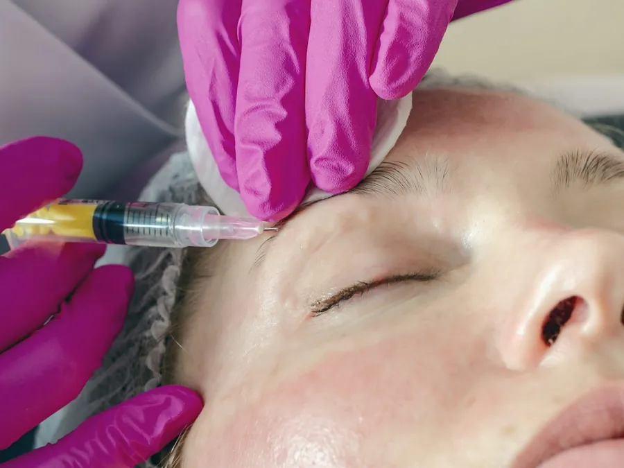
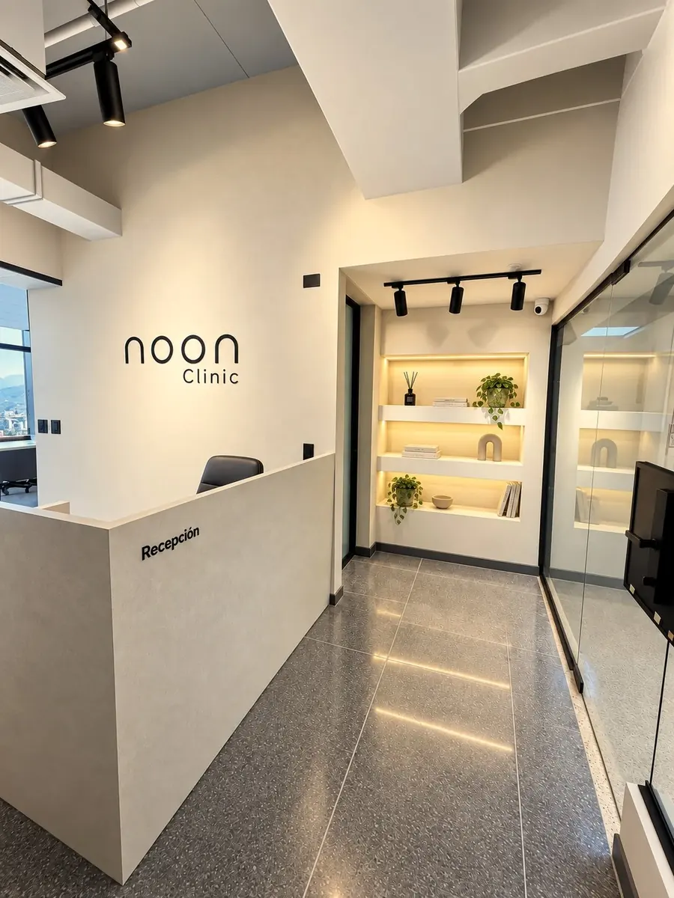

Lipotransferencia glútea desde EE. UU.
Lipotransferencia glútea
si vives en Estados Unidos
El miedo que viste en redes es real, pero no viene de dónde te operas. Viene de cómo se decide qué se hace en una sola cirugía.
Viste un video o un titular sobre lipotransferencia glútea que salió mal, y ahora la pregunta ya no es solo cuánto volumen quieres, sino si es seguro hacértela fuera de Estados Unidos. Es una pregunta justa. La lipotransferencia glútea en Medellín combina liposucción con la transferencia de esa misma grasa, purificada, a los glúteos, y es, de todas las cirugías de esta lista, la que más cuidado exige en cómo se decide, no en dónde se hace.
Todo sobre la cirugía en sí (qué es, para quién es, recuperación y riesgos) está en Lipotransferencia glútea en Medellín.
Qué hace la lipotransferencia glútea (y qué no es)
Combina liposucción de zonas como abdomen o espalda con la transferencia de esa grasa, ya purificada, a los glúteos, para darles volumen y forma sin usar implantes. En noon dura entre 3 y 5 horas, con anestesia general, siempre en las salas de cirugía habilitadas de Q2. No es una cirugía para subir de peso ni una forma de guardar grasa para después: una parte de lo transferido se reabsorbe en los primeros meses, y lo que se integra después de eso es lo que se queda.
La pregunta real detrás del miedo: ¿es peligrosa?
El miedo no está inventado por un algoritmo. El CDC (el Centro para el Control de Enfermedades de EE. UU.) revisó muertes de ciudadanos estadounidenses tras cirugía cosmética en el exterior entre 2009 y 2022, y encontró que casi todos los casos de embolia grasa de esa revisión correspondían a pacientes que se habían hecho liposucción junto con transferencia de grasa a los glúteos en la misma cirugía. Las muertes además subieron con los años: de un promedio de 4 al año entre 2009 y 2018 a 13 al año entre 2019 y 2022.
Esto es lo que casi nadie repite cuando comparte el titular: el propio CDC señala que el factor de riesgo no es el país donde se opera. Es la obesidad y combinar varios procedimientos largos en una sola cirugía. Por eso en noon esta decisión pasa por exámenes previos obligatorios, no por "ya que vine, aprovechemos el viaje". Tu cirujano decide qué se hace y qué no con tus exámenes en la mano, no con tu calendario de vacaciones.
Para quién es (y cuándo la indicación cambia)
Buscas lipotransferencia glútea si quieres más volumen o proyección en los glúteos, tienes grasa suficiente en otras zonas para transferir, y prefieres no usar implantes. Si no tienes suficiente grasa donante, la indicación cambia: eso se evalúa en tu valoración presencial, examinándote, no antes de viajar. La recuperación avanza por etapas: en las primeras semanas se evita la presión directa sobre los glúteos según lo que indique tu cirujano, con prenda y masajes; entre el mes 1 y el 2 vuelves poco a poco al ejercicio; hacia el mes 6 el volumen ya está estable.
Elegir bien quién te opera importa más en esta cirugía que en casi cualquier otra: es quien decide, con criterio y no con ganas de vender, qué tanto hacer en una sola sesión. Cómo elegir cirujano plástico en Medellín explica qué verificar antes de agendar.
Cómo se organiza el viaje a Medellín desde Estados Unidos
Primero la valoración presencial en Medellín, con tus exámenes al día. Ahí se confirma si la lipotransferencia es para ti, si hay suficiente grasa donante, y cuántos días necesitas de verdad. Usamos como referencia 2 a 3 semanas para contorno corporal, pensadas para que alcancen los controles antes de volar, no solo el día de la cirugía. Si lo que te preocupa es combinarla con otra cirugía en el mismo viaje, ya respondimos esa parte en lipo en Medellín para pacientes de EE. UU.
Viajas acompañada los primeros días. No es solo un detalle de logística: es alguien que te ayude en casa cuando no puedes sentarte como antes, no solo quien te recoge en el aeropuerto de Rionegro.
Lo que no te vamos a prometer
No prometemos un resultado idéntico al del video que viste, ni una talla exacta, ni que toda la grasa transferida se quede para siempre. Lo que sí podemos decirte es cómo se decide con cuidado: valoración presencial con el Dr. Fernando Ruiz, exámenes antes de operar, un especialista que te dice que no cuando corresponde, y seguimiento por WhatsApp o videollamada una vez ya volviste a EE. UU., sin que eso reemplace los controles presenciales que te toque hacer antes de volar.
Si todavía te preocupa cómo verificar que una clínica haga bien este proceso, es seguro operarse en Colombia cubre esa parte con más detalle.
Esta semana, antes de mirar vuelos, escríbenos por WhatsApp y cuéntanos qué buscas y si tienes dudas sobre si tienes suficiente grasa donante. Con tus exámenes en la mano empezamos a hablar de fechas reales, no de lo que viste en un video.
Procedimientos de esta guía
Esta guía es informativa y no reemplaza una valoración médica. La indicación, los tiempos de recuperación y la fecha de regreso los define tu especialista en persona. Todo procedimiento tiene riesgos y los resultados varían de una persona a otra.
Preguntas frecuentes
Preguntas frecuentes
¿Es peligrosa la lipotransferencia glútea (BBL)?
El CDC revisó muertes de ciudadanos de EE. UU. tras cirugía cosmética en el exterior y encontró que casi todos los casos de embolia grasa correspondían a pacientes que combinaron liposucción con transferencia de grasa a los glúteos en una sola cirugía. El propio CDC señala que el riesgo no es el país: es la obesidad y combinar varios procedimientos largos a la vez. Por eso esa decisión pasa por exámenes previos, no por calendario.
¿Qué pasa si no tengo suficiente grasa para transferir?
La indicación cambia. Eso se evalúa examinándote en tu valoración presencial, con tus exámenes en la mano, no antes.
¿Cuánto dura la cirugía y qué anestesia usan?
En noon dura entre 3 y 5 horas, con anestesia general, siempre en las salas de cirugía habilitadas de Q2, nunca en un consultorio.
¿Se pierde volumen con el tiempo?
Una parte de la grasa transferida se reabsorbe en los primeros meses. Lo que se integra después de eso es lo que se queda, con el volumen ya estable hacia el mes 6.
¿Puedo combinarla con otra cirugía en el mismo viaje?
A veces sí, pero esa decisión la toma tu cirujano con tus exámenes en la mano, no tu calendario. Lo explicamos con más detalle en la guía sobre lipo para pacientes de EE. UU.
Blog
Sigue leyendo.

Operarme en diciembre en Colombia, sin perder la NavidadYa tienes el viaje a Colombia agendado para ver a tu familia. La pregunta es si también cabe una cirugía, o si pedirle eso a diciembre es pedirle demasiado.Leer
¿Es seguro operarse en Colombia?La respuesta corta es sí, pero depende de la clínica que elijas, no del país donde queda.Leer Controles después de operarte en Colombia al volver a Estados UnidosLa cirugía quedó en Medellín. El seguimiento, no.Leer
Controles después de operarte en Colombia al volver a Estados UnidosLa cirugía quedó en Medellín. El seguimiento, no.LeerPor ciudad
Si vives en Estados Unidos.
noon Clinic
Organicemos tu viaje
Escríbenos desde EE. UU. y armamos contigo las fechas de valoración, procedimiento y controles.
Te respondemos en minutos por WhatsApp, en horario de atención. Resolvemos tus dudas y agendamos tu valoración presencial; por WhatsApp no diagnosticamos. Por qué noon